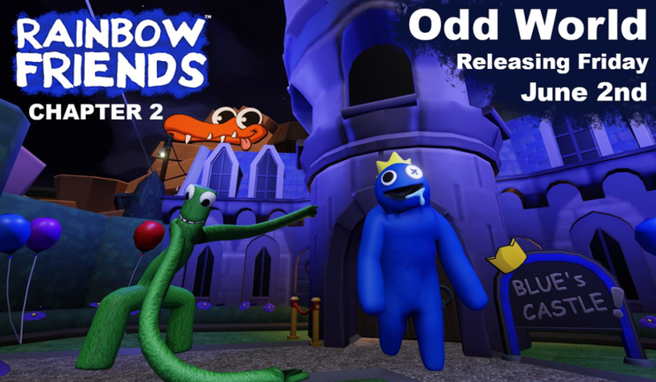

GenresSandbox, Open World |
FeaturesCo-Op, Competitive, Controller Support, Multiplayer, Single Player |
MoreExplore large, destructible environments where no two games are ever the same. Team up with friends by sprinting, climbing and smashing your way to earn your Victory Royale, whether you choose to build up in Fortnite Battle Royale or go no-builds in Fortnite Zero Build. Discover even more ways to play across thousands of creator-made game genres: adventure, roleplay, survival and more. Or, band together with up to three friends to fend off hordes of monsters in Save the World. Latest Update!Fortnite Chapter 4 Season 2The chapter starts out after the events of the previous chapter. The Player(s) run to ODD World. Once the player(s) arrive; you encounter a mysterious man, who is trying to cut the fence using pliers. He is surprised to see the player(s), and asks what the player(s) are doing in the woods. A player warns the man about encountering dangerous "monsters".The man doesn't believe your claim, and decides that you can collect lightbulbs for an SOS signal. Red, appears from beyond the fence and releases Blue and Green from a garage. Hour 1 The Player(s) are tasked with collecting 25 lightbulbs around the map to create an SOS signal. These lightbulbs are located around various points within the map. If the player(s) survive the round and complete the task, this will end the first hour. A cutscene will then occur. Hour 2 The Player(s) are tasked to collect 15 gas canisters to power the drill. This, the technician hopes, will be able to drill through part of ODD World and help the player(s) escape the theme park. Yellow is an antagonist that will hunt you down from this hour in the game onward. If the player(s) collect the canisters, the hour will end. A cutscene will then occur. Hour 3 To get the main ending for this hour, collect all 10 Lookies scattered around the map. The Lookies may roll quickly if approached, so be careful. They are found in various places in the map. To get an alternate ending, wait between 10 and 15 minutes for the drop tower's platform to reach the top. If the player(s) survive the round or complete the task, this will end the third hour. |